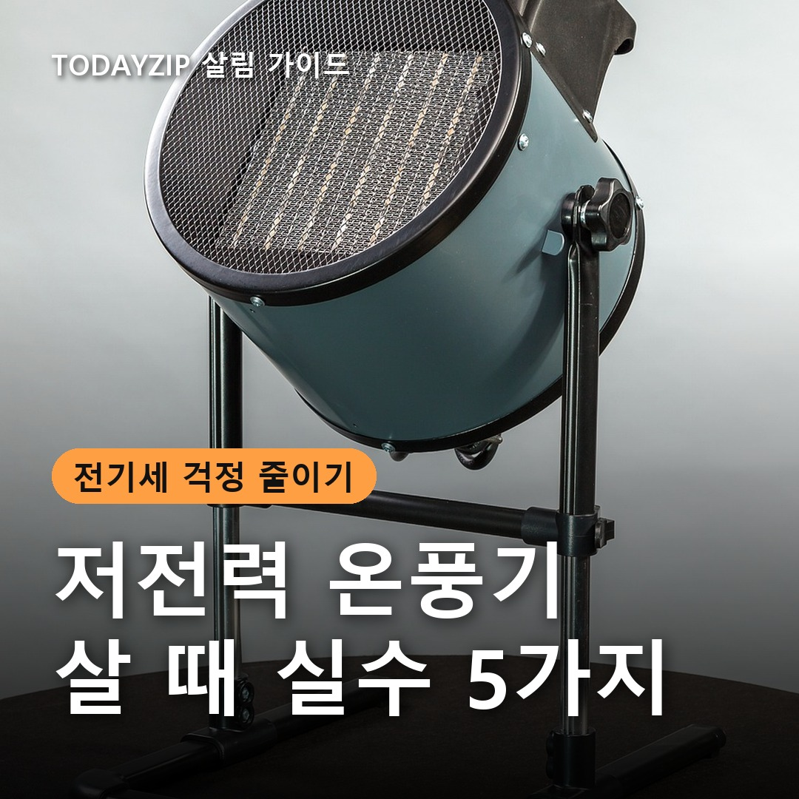
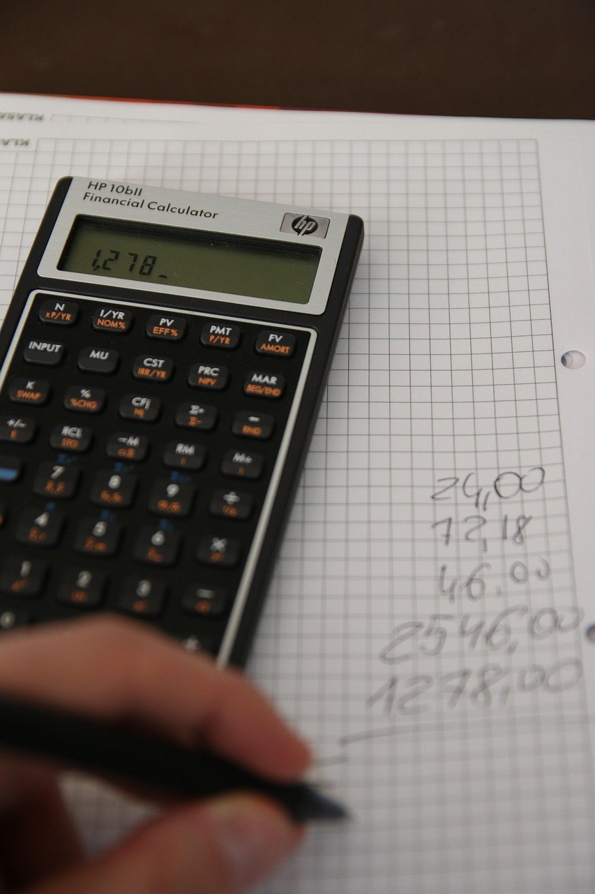
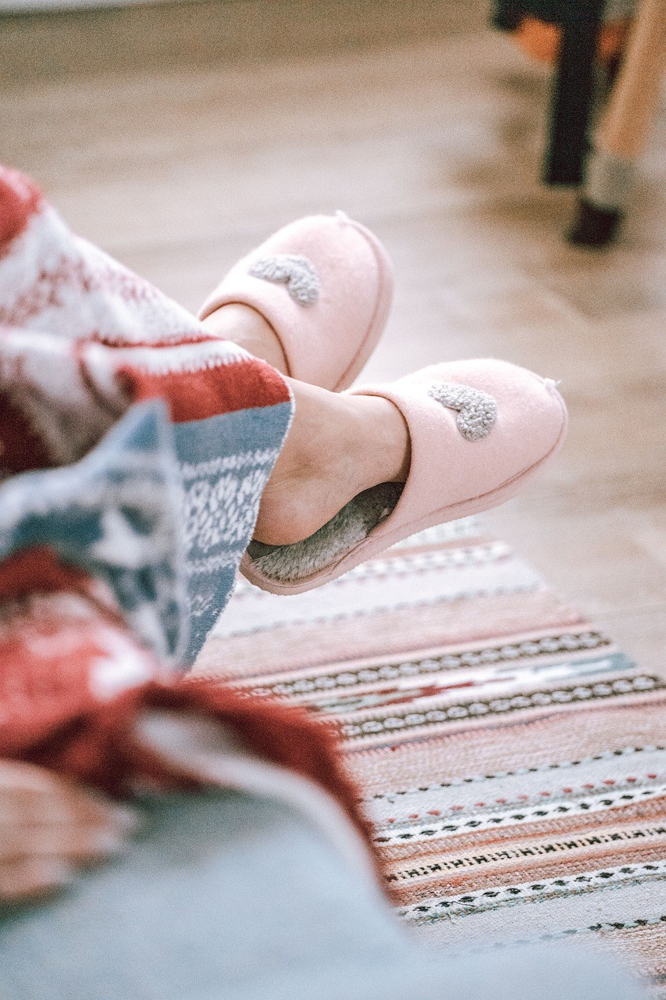

이 포스팅은 쿠팡 파트너스 활동의 일환으로, 이에 따른 일정액의 수수료를 제공받습니다.
[사진 1: 썸네일]
책상 밑이나 침대 옆만 잠깐 데우고 싶은데, 전기세가 무서워서 '저전력 온풍기'부터 검색해 본 적 있나요? 작은 온풍기는 2만~9만 원대가 많아 겨울 초입에 많이 찾는 살림템이에요.
그런데 같은 '저전력'이라도 소비전력은 수백 W부터 2,000W까지 달라요. 흔한 실수 5가지와 대신 확인할 것을 정리해 드릴게요.
[사진 2]
'저전력'은 법으로 정해진 등급이 아니라 판매 페이지에 붙는 이름이에요. 저전력 온풍기라고 적혀 있어도 강 모드가 1,000W를 넘는 제품이 흔해요.
상세페이지나 본체 라벨의 '정격 소비전력'을 보세요. '500W/1,000W'처럼 두 숫자라면 실제로 많이 쓸 단계로 계산하세요.
📷 [직접 찍은 사진 넣기: 전기요금 고지서(또는 한전ON 화면)에서 한 달 사용량 kWh가 적힌 부분]
온풍기 전기세는 먼저 사용량(kWh)을 구하면 쉬워요. 공식은 '소비전력(W) ÷ 1000 × 하루 사용 시간 × 사용 일수'예요. 하루 4시간, 30일 기준이면 아래와 같아요.
이 kWh는 우리 집 한 달 사용량 위에 더해져요. 주택용 요금은 누진제라 원래 사용량이 많은 집일수록 같은 1kWh도 비싼 구간에 걸려요. 한전ON 앱의 예상 요금 조회로 확인해 보세요.
✍️ [내 경험 한두 줄: 우리 집 겨울철 한 달 전기 사용량은 몇 kWh쯤인가요?]
| 소비전력 | 하루 4시간 × 30일 | 이런 용도에 |
|---|---|---|
| 500W | 60kWh | 책상 밑·발밑 국소 난방 |
| 1,000W | 120kWh | 작은 방 한쪽, 짧게 데우기 |
| 2,000W | 240kWh | 빨리 데우기, 오래 켜면 부담 큼 |
[사진 3]
작은 온풍기는 따뜻한 바람을 앞쪽으로 보내는 국소 난방이에요. 바람이 닿는 자리는 금방 따뜻하지만, 외풍이 있는 방 전체를 데우기에는 힘이 부족해요.
그래서 '어디를 데울지'부터 정하세요. 발밑·책상 밑이면 낮은 W로 충분하고, 옷 갈아입는 자리처럼 잠깐 쓰는 곳은 높은 W를 짧게 쓰는 편이 나아요.
✍️ [내 경험 한두 줄: 겨울에 우리 집에서 제일 추운 자리는 어디인가요? (책상/거실 소파/욕실 앞/침대 옆)]
[사진 4]
온풍기는 뜨거운 바람이 나오는 열기구라서 가격보다 안전장치가 먼저예요. 상세페이지에서 아래 항목이 있는지 하나씩 확인하세요.
📷 [직접 찍은 사진 넣기: 집에 있는 멀티탭 옆면·뒷면의 정격 용량(A, W) 표시]
1,000W가 넘는 온풍기를 다른 가전과 한 멀티탭에 같이 꽂으면 멀티탭이 뜨거워질 수 있어요. 멀티탭 옆면이나 뒷면에 적힌 정격 용량(○A, ○W)을 확인하고, 가능하면 벽 콘센트에 바로 꽂으세요.
둘 자리 근처에 콘센트가 있는지도 미리 보세요. 연장선을 길게 끌어오면 선에 걸려 넘어지기 쉬워요.
Q. 저전력 온풍기를 하루 종일 켜도 괜찮을까요?
A. 500W라도 하루 10시간이면 한 달 150kWh가 더해져요. 국소 난방은 필요한 시간만 켜고 타이머를 쓰는 게 전기세와 안전 모두에 좋아요.
정리하면, 발밑만 데울 거면 500W 안팎, 작은 방 한쪽이면 강약 조절되는 1,000W급을 보고, 어떤 저전력 온풍기든 실제 소비전력과 안전장치를 먼저 확인하세요.
여러분은 겨울에 어느 자리가 제일 추운가요? 보조 난방을 어떻게 하고 계신지 댓글로 나눠 주세요.
인스타그램 @todayzip.info 에서 살림 꿀팁을 30초 영상으로도 볼 수 있어요.
이 포스팅은 쿠팡 파트너스 활동의 일환으로, 이에 따른 일정액의 수수료를 제공받습니다.